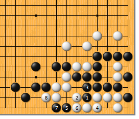
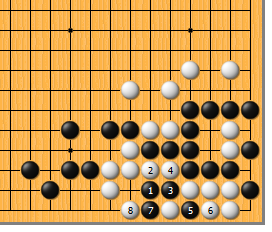
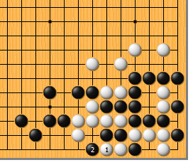
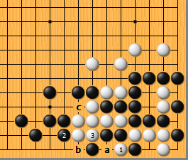
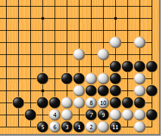
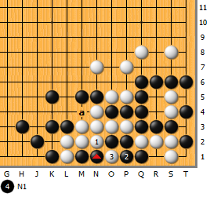
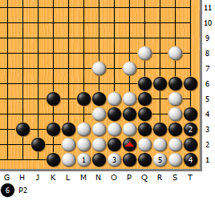

|  |  | |
| 图1 这道题非常难。为了便于理解，我们先来看看失败图。黑1挤，是想让白成假眼。白2打，黑3粘，白4粘时，黑5必点。然而白6粘，黑7爬后，白8拐，白吃三子而活。 | 图2 黑1点怎么样？白2冲，黑3长，白4断，黑5先扑，白6提后，再于7位拐，至白8成劫。看起来不错，其实白6有更好的应手……
| |
|
 |
 | |
图3 前图的白6可于本图1位爬弃子，是绝妙的好手！黑2提后……
| 图4 接前图。白1扑，解决问题。黑2紧气时，白3打。接下来，黑a则白b，对杀白胜。白3如于b位紧气，被黑c位紧气，反而慢一气被吃，千万不可大意！
| |
|
 |
 | |
图5 现在公布正解。黑1点，乃是要点。由于黑眼大气长，如做不出两眼，白对杀必负。白2顶，是唯一的应手，黑3长，白4曲，黑5尖，和白6交换，甚是玄妙。接下来，黑7扳至黑11提，皆属必然…… | 图6 白1打，黑2可粘。要是没有前图黑5和白6的交换，白1就可于2位扑；然而现在如于2位扑，由于前面已紧了一气，黑可于a位紧气，白不入气。白3提后，黑4打二还一。
| |
|  | 您的高见 | |
图7 白1打，黑2粘，白3提时，黑不用打劫，径直于4位紧气，白5提时，黑6吃“倒脱靴”！真是绝妙的手段啊！吾辈不如也。 |